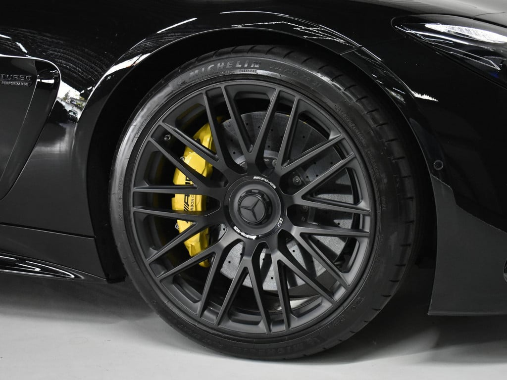
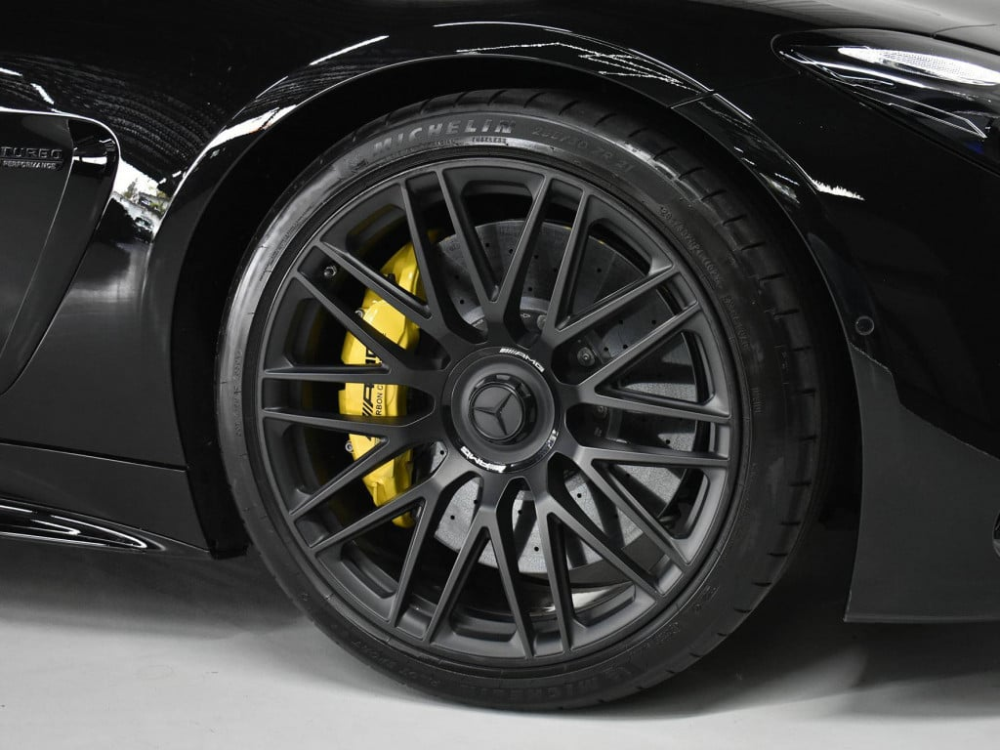

Mercedes-AMG GT 63S


 

Ficha técnica completa
- Motor: 4.0 L V8 Biturbo
- Potência: 639 cv
- 0–100 km/h: ~3.2 s
- Tração: AWD
Dados principais
4.0 V8 | 639 cv | R$ 1.800.000
Descrição
O GT 63S é um sedan esportivo que une luxo e performance: ideal para quem quer espaço sem abrir mão de esportividade.